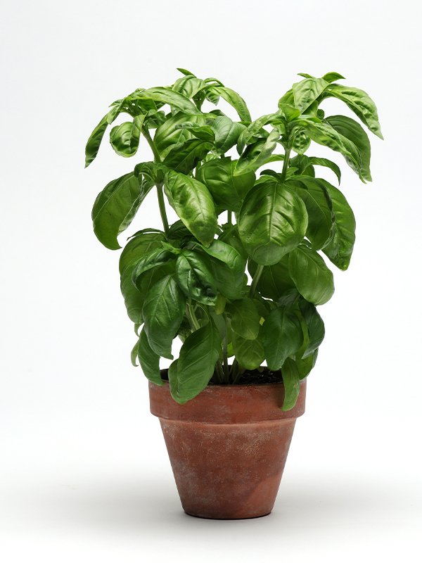
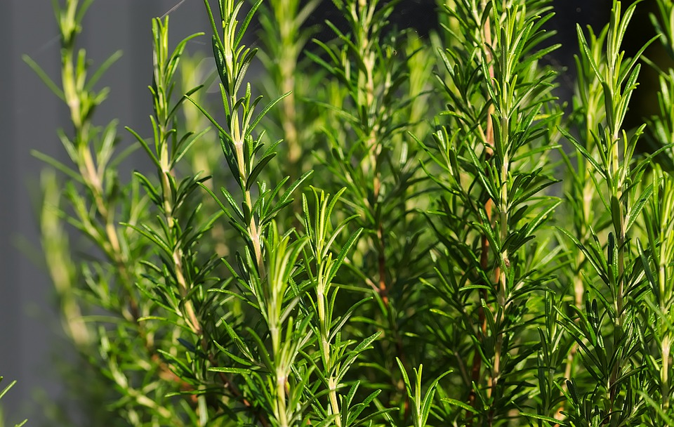

1.โหระพาอิตาเลียน (Italian Basil)
เป็นพืชสมุนไพรที่นิยมนำมาประกอบอาหาร โดยเฉพาะอาหารอิตาเลียน มีใบสีเขียวเข้ม มีกลิ่นหอมเฉพาะตัว และรสชาติที่แตกต่างจากโหระพาไทยใบมีขนาดใหญ่กว่าโหระพาไทย และมีกลิ่นหอมเฉพาะตัว มีรสหวานเล็กน้อย และมีกลิ่นพริกไทยดำ

2. ไธม์ (Thyme)
เป็นสมุนไพรของพืชบางสปีชีส์ในสกุล Thymus ซึ่งเป็นสกุลของสมุนไพรไม่ผลัดใบหลายปีมีกลิ่นในวงศ์กะเพรา (Lamiaceae) มีประโยชน์ในการทำอาหาร ยา และไม้ประดับ
3. เสจ (Sage)
เป็นสมุนไพรที่มีชื่อทางวิทยาศาสตร์ว่า Salvia officinalis เป็นพืชในวงศ์เดียวกับสะระแหน่ (Lamiaceae) มีลักษณะเป็นไม้พุ่มขนาดเล็ก ใบมีสีเขียวอมเทา มีขนเล็กน้อย และมีกลิ่นหอมเฉพาะตัว นิยมนำมาใช้ในการปรุงอาหารและเป็นยาสมุนไพร ใบรูปไข่ ปลายใบแหลม หรือทู่ ขอบใบหยักเล็กน้อย ผิวใบมีขนเล็กน้อย ทำให้รู้สึกนุ่มเมื่อสัมผัส
4. ออริกาโน (Oregano)
เป็นสมุนไพรที่มีกลิ่นหอมและรสชาติเข้มข้น เป็นที่นิยมใช้ในอาหารอิตาเลียนและกรีก โดยเฉพาะในพิซซ่าและซอสต่างๆ นอกจากนี้ยังเป็นที่รู้จักในเรื่องของคุณสมบัติต้านอนุมูลอิสระ สามารถปลูกในกระถางหรือแปลงกลางแจ้งได้ ดินที่ระบายน้ำได้ดีและแสงแดดจัดเป็นสิ่งที่ดีสำหรับการเจริญเติบโต
5. เปเปอร์มินต์ (Peppermint)
เป็นพืชสมุนไพรที่อยู่ในตระกูลมินต์ มีกลิ่นหอมเย็นสดชื่น นิยมใช้ในหลากหลายรูปแบบ มีกลิ่นหอมเย็นและสดชื่นที่เป็นเอกลักษณ์ มีรสชาติที่เผ็ดร้อนและเย็นซาบซ่า มีสีเข้ม ค่อนข้างเรียว ปลายใบแหลม
6. โรสแมรี่ (Rosemary)
เป็นสมุนไพรที่มีกลิ่นหอมและมีรสชาติเฉพาะตัว เป็นไม้พุ่มขนาดเล็ก มีใบเรียวเล็กคล้ายเข็มสีเขียวสดหรือเขียวอมเทา โรสแมรี่นิยมใช้ในการประกอบอาหารหลากหลายชนิด ทั้งสดและแห้ง ไม้พุ่มขนาดเล็ก สูงประมาณ 1-2 เมตร

7. เลมอน (Lemon)
เป็นผลไม้ตระกูลส้ม มีลักษณะเป็นผลสีเหลือง รสชาติเปรี้ยว และมีกลิ่นหอม เป็นที่นิยมนำมาใช้ประกอบอาหาร เครื่องดื่ม และผลิตภัณฑ์ต่างๆ ผลกลมรี ปลายผลมีติ่งแหลม ผลอ่อนสีเขียว เมื่อสุกเปลี่ยนเป็นสีเหลือง เนื้อในฉ่ำน้ำ มีเมล็ดหลายเมล็ด เชื่อว่ามีถิ่นกำเนิดในแถบเอเชียตะวันออกเฉียงใต้และอินเดีย

8. วอเตอร์เครส (Watercress)
คนไทยนิยมเรียกว่า "ผักน้ำ" หรือ "สลัดน้ำ" เป็นผักใบเขียวที่มีลักษณะคล้ายผักเป็ด แต่มีใบยาวกว่า วอเตอร์เครสเป็นพืชที่ชอบน้ำและอากาศเย็น และได้รับความนิยมในกลุ่มคนรักสุขภาพเนื่องจากมีคุณค่าทางโภชนาการสูง วอเตอร์เครสเป็นผักใบเขียว มีลักษณะคล้ายผักเป็ด แต่ใบจะยาวกว่า ลำต้นและใบอ่อนสามารถนำมารับประทานได้
9. พาร์สลีย์ (Parsley)
เป็นพืชสมุนไพรและผักใบเขียวที่มีกลิ่นหอมเฉพาะตัว นิยมใช้ในการปรุงอาหาร โดยเฉพาะอาหารตะวันตก ใช้ตกแต่งจาน หรือเป็นส่วนผสมในซอสและน้ำสลัด พาร์สลีย์เป็นพืชล้มลุกที่มีลักษณะคล้ายผักชี มีทั้งใบหยิกและใบเรียบ ส่วนที่นิยมนำมาใช้คือใบ
10. ลาเวนเดอร์ (Lavender)
เป็นพืชดอกในวงศ์มินต์ (Lamiaceae) ที่มีกลิ่นหอมและมีดอกสีม่วงถึงน้ำเงิน มักพบในแถบเมดิเตอร์เรเนียนและพื้นที่อื่นๆ ที่มีสภาพอากาศคล้ายคลึงกัน ลาเวนเดอร์เป็นที่รู้จักกันดีในเรื่องของกลิ่นหอมที่ช่วยผ่อนคลาย และถูกนำมาใช้ประโยชน์หลากหลาย เป็นไม้พุ่มขนาดเล็กถึงกลาง ใบยาวเรียว ดอกออกเป็นช่อสีม่วงถึงน้ำเงิน
12. มะเดื่อฝรั่ง (Ficus carica L.)
เป็นไม้ยืนต้นผลัดใบ มีถิ่นกำเนิดในแถบเมดิเตอร์เรเนียนและเอเชียตะวันตก เป็นพืชที่นิยมปลูกเพื่อนำผลมารับประทานและใช้ประโยชน์ ใบเดี่ยว รูปไข่ หรือรูปหอก ขอบใบหยักลึก 3-5 แฉก ใบมีกลิ่นหอม ผลมีรูปทรงและขนาดแตกต่างกันไปตามสายพันธุ์ มีทั้งทรงกลม ทรงระฆัง หรือผลกลวง ภายในผลมีเมล็ดขนาดเล็กจำนวนมาก ผลมีรสหวาน ชุ่มฉ่ำ
13. ทาร์รากอน (Tarragon)
เป็นพืชสมุนไพรยืนต้นที่มีกลิ่นหอมเฉพาะตัว นิยมใช้ในการปรุงอาหาร โดยเฉพาะอาหารฝรั่งเศส มีรสชาติคล้ายชะเอมเทศและโป๊ยกั๊กเล็กน้อย มีทั้งแบบสดและแบบแห้ง ใช้เพิ่มรสชาติให้กับอาหารหลากหลายชนิด ทาร์รากอนเป็นพืชล้มลุกที่มีอายุหลายปี ใบมีลักษณะเรียวยาว ปลายแหลม และมีกลิ่นหอมเฉพาะตัว
14. เลมอนบาล์ม (Lemon Balm)
เป็นพืชสมุนไพรในตระกูลมิ้นต์ (Mint) ที่มีกลิ่นหอมคล้ายมะนาวและตะไคร้ เป็นพืชล้มลุก มีใบสีเขียวและมีกลิ่นหอมเฉพาะตัว มีลักษณะคล้ายสะระแหน่ แต่ใบจะมีกลิ่นหอมคล้ายมะนาว สามารถปลูกได้ทั้งในกระถางและลงดิน
15. คาลามินต์ (Calamint)
พืชสมุนไพรชนิดหนึ่งในวงศ์เดียวกับมิ้นท์ มีกลิ่นหอมคล้ายมิ้นท์และออริกาโน มักนิยมปลูกเป็นไม้ประดับในสวน หรือนำมาใช้เป็นส่วนผสมในอาหารและชาสมุนไพร เป็นไม้พุ่มเตี้ย ใบมีสีเขียวอมเทา หรือสีเขียวอ่อน และมีดอกสีขาว ม่วง หรือชมพู